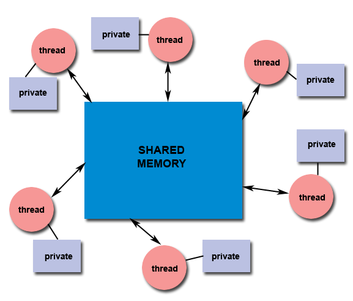

hyPACK-2013 Mode 1 : POSIX Thread Programming (Pthreads)
|
The software threading model on the computing platform which consists of multi-core processors
play an important role to understand and enhance the performance of your application. Several factors such as proper
use of threading, understanding of how threads operate, algorithm used for your application, the
threading application programming interface (API), the compiler runtime environment, and the
number of multi-cores used for your application.
Example programs using different APIs. Compilation and execution
of Pthread programs, programs numerical and non-numerical computations
are discussed using
different thread APIs to understand Performance issues on mutli-core processors.
|
List of Pthreads Programs
-
Pthreads programs to illustrate basic Pthread API library calls :
Examples include some introductory programs Creating Threads, Managing Threads. Thread
communications, Thread synchronization, Atomic Operations, Critical section, thread semaphores
(mutex), Stack management, Join Operations and Processor affinity.
Simple programs using thread APIs are discussed.
-
Programs based on Numerical Computations (Dense Matrix Comp.) using thread APIs. :
Examples programs on numerical integration of "pi" value by using different algorithms
vector-vector multiplication using block striped partitioning,
matrix-vector multiplication using self scheduling algorithm, and block checkboard
partitioning, computation of Infinity norm of the square matrix using block striped partitioning.
The focus is to use
different thread APIs and understand Performance issues on mutli-core processors.
-
Non-Numerical Comp. (Sorting, Searching, Producer-Consumer) using thread APIs.:
Example programs on Sorting, Searching algorithms, Producer Consumer programs & Thread-I/O programs
are discussed. The focus is to use
different thread APIs and understand Performance issues on mutli-core processors.
-
Test suite of Programs/Kernels and Benchmarks on Multi-Core Processors :
A test suite of pthread programs on selective Dense Matrix computations, and sorting/Searching Algorithms, Thread
based I/O are discussed on mutli-core processors. Different thread APIs have been
used to understand Performance issues on mutli-core processors.
-
Pthreads programs to illustrate read write API library calls :
Programs that illustrate the use of Read-Write Lock using different read-write lock APIs are described.Sample demo code that gives basic idea of how to use Read-Write Lock and one sample application using both mutex and Read-Write Lock is described so that one can get better idea of what is exact difference between these synchronization constructs and how to use them.

-
Pthreads programs to illustrate producer/consumer program for large no. of threads :
Programs that illustrate the application of Pthreads to producer / consumer problem with large number of producers and consumers. It illustrates the usage of Pthreads for
large no. of threads reading and writing to vectors implemented in 'indexed-access' (or array implementation) and 'sequential-access' (or linked list implementation). It also
shows how the problem can be solved using the Mutex objects and condition-variable objects of Pthreads.
It also illustrates 'thread-affinity' setting, to bind threads to particular number of cores. For different thread-affinity masks, the performance can be observed.
-
Pthreads programs to illustrate simple media player :
Pthread program for simple media streaming player, which consists of
a thread monitoring a network port for arriving data, a decompressor thread for decompressing packets and generating frames
in a video sequence, and a rendering thread that displays frames at programmed intervals.
These three threads must communicate via shared buffers - an in-buffer between the network and decompressor, and an out-buffer
between the decompressor and renderer. Implement this simple threaded framework. The network thread calls a dummy function
listen_to_port to gather data from the network. For the sake of this program, this function generates a random string of bytes
of desired length. The decompressor thread calls function decompress, which takes in data from the in-buffer and returns
a frame of predetermined size.
For this exercise, generate a frame with random bytes. Finally the render thread picks frames from the out buffer and calls the
display function. This function takes a frame as an argument, and for this exercise, it does nothing. Implement this threaded
framework using condition variables. Note that you can easily change the three dummy functions to make a meaningful streaming
media decompressor.
|
|
Introduction to PThreads
|
POSIX threads or Pthreads is a portable threading library, which provides consistent programming interface across
multiple operating systems. Pthreads is emerged as a standard threading interface for Linux and Unix
platforms. A number of vendors provide vendor specific thread APIs. More core Pthreads functions on thread
creation and destruction, synchronization and other thread features. In shared memory multiprocessor
architectures, such as SMPs, threads can be used to implement parallelism. Historically, hardware vendors
have implemented their own proprietary versions of threads, making portability a concern for
software developers.
A Thread is a 'Light Weight Process'. A thread is a stream of instructions that can be scheduled as an independent unit.
A thread exists within a process, and uses the process resources. Since threads are very small compared with processes,
thread creation is relatively cheap in terms of CPU costs. As processes require their own resource bundle,
and threads share resources, threads are likewise memory frugal. There can be multiple threads within a process.
Multithreaded programs may have several threads running through different code
paths "simultaneously".
The IEEE specifies a standard 1003.1c-1995, POSIX API.
For UNIX systems, a standardized C language threads programming interface has
been specified by the IEEE POSIX 1003.1c standard. Implementations that adhere to this standard are referred to
as POSIX threads, or Pthreads. The concepts used in this "Pthreads on Multi-Cores" are largely
independent of the API and can be used for programming with other thread APIs (Windows NT threads,
Solaris threads, Java threads etc.. ).
The Pthread module begins with an introduction to concepts, motivations, and design considerations
for using Pthreads.
Each of the three major classes of routines in the Pthreads API such as Thread Creation,
Thread Termination,
Thread Management, Mutex Variables,
and Condition Variables. Example codes are used throughout to demonstrate how to use most of the Pthreads routines
needed by a new Pthreads programmer.
|
|
An Overview of Pthreads
|
The most significant recent trend in mass-market processor sales has been the growth of multi-core
processors. Concurrent programming solutions are required to take advantage of this parallel
processing capability. Historically, hardware vendors have implemented their own proprietary
versions of threads. These implementations differed substantially from
each other making it difficult for programmers to develop portable threaded applications.
Several business motives drive the development of dual-core architectures.
Additionally, for general-purpose processors, much of the motivation for multi-core processors
comes from the increasing difficulty of improving processor performance by
increasing the operating frequency (frequency-scaling). In order to continue
delivering regular performance improvements for general-purpose processors,
manufacturers such as Intel and AMD have turned to multi-core designs, sacrificing
lower manufacturing costs for higher performance in some applications and systems.
Multi-core architectures are being developed, but so are the alternatives.
An especially strong contender for established markets is to integrate more
peripheral functions into the chip.
Software benefits from multicore architectures where code can be executed in parallel.
Under most common operating systems this requires code to execute in separate threads or
processes. Each application running on a system runs in its own process
so multiple applications will benefit from multicore architectures. Each application may
also have multiple threads but, in most cases, it must be specifically written to utilize
multiple threads. Operating system software also tends to run many threads as a part of
its normal operation. Running virtual machines will benefit from adoption of multiple core
architectures since each virtual machine runs independently of others and can be executed
in parallel.
Most application software is not written to use multiple concurrent threads intensively
because of the challenge of doing so. A frequent pattern in multithreaded application design
is where a single thread does the intensive work while other threads do much less.
In order to take full advantage of the capabilities provided by threads, a standardized programming interface was required. For UNIX systems, this
interface has been specified by the IEEE POSIX 1003.1c standard (1995).
Implementations,which adhere to this standard are referred to as POSIX threads, or Pthreads. Most hardware vendors now offer Pthreads in addition to
their proprietary API's.
Pthreads are defined as a set of C language programming types and procedure calls, implemented with a pthread.h header/include file and a
thread library - though the this library may be part of another library, such as libc.
The character P in Pthreads stands for POSIX.It is a set of threading interfaces developed by IEEE Committe in charge of specifying a portable
operating system interface(POSIX). POSIX committee defined a basic set of functions and data structures that it hoped would have been used by
numerous vendors so that threaded code can be ported easily across operating systems. It specifies API to handle most of actions required by
threads.It is a library that has standardized functions for using threads across different platforms.
In general though, in order for a program to take advantage of Pthreads, it must be able to be organized into discrete,
independent tasks which can execute concurrently. For example, if routine1 and routine2 can be interchanged, interleaved and/or overlapped in real time,
they are candidates for threading as shown in Figure 1.

Figure 1. concurrent execution of pthreads
Programs having the following characteristics may be well suited for pthreads:
- Work that can be executed, or data that can be operated on, by multiple tasks simultaneously
- Block for potentially long I/O waits
- Use many CPU cycles in some places but not others
- Must respond to asynchronous events
- Some work is more important than other work (priority interrupts)
Pthreads can also be used for serial applications, to emulate parallel execution. A perfect example is the typical web browser,
which for most people, runs on a single cpu desktop/laptop machine.
|
|
Shared Memory Model
|
Symmetric multiprocessing (SMP) designs have been long implemented using discrete CPUs,
the issues regarding implementing the architecture and supporting it in software are well known.
In addition to operating system (OS) support, adjustments to existing software are required to
maximize utilization of the computing resources provided by multi-core processors.
Also, the ability of multi-core processors to increase application performance depends
on the use of multiple threads within applications.
The most important challenge in shared-address-space programming is the decomposition of a single
application into several, dependent and interacting tasks. The efficiency of the parallel program
is highly dependent on this decomposition step: it determines the synchronization and
communication overhead.
Other challenges are synchronization and communication between parallel threads.
Synchronizing parallel threads is a tedious task: synchronizing too often leads to
inefficient program execution but not enough synchronization can lead to incorrect results
due to the data races or condition hazards. Faulty synchronization can lead to deadlocks in
the Shared-address-spcae programming.
The shared memory model is quite suitable to Pthread Programming and the users should
understand concepts of
synchronization, critical section and deadlock conditions.
Synchronization
is an enforcing mechanism used to impose constraints on the order of execution of threads.
The features of the Shared
memory model :
- All threads have access to the same global, shared memory
- Threads also have their own private data
- Programmers are responsible for synchronizing access (protecting) globally shared data.

Figure 2. Typical Shared Memory Model Using Threads
|
|
Thread Safeness
|
Thread-safeness: in a nutshell, refers an application's ability to execute multiple threads simultaneously
without "clobbering" shared data or creating "race" conditions.
For example, suppose that your application creates several threads, each of
which makes a call to the same library routine:
|
-
This library routine accesses/modifies a global structure or location in memory.
-
As each thread calls this routine it is possible that they may try to modify this global
structure/memory location at the same time.
-
If the routine does not employ some sort of synchronization constructs to prevent data corruption, then it
is not thread-safe.

Figure 3. Typical situtation for thread-safe
The developer should know about the thread-safety of the external library routines in order to
obtain correct results.
|
|
Why Threads ?
|
Threaded
programming models offer significant advantages over message-passing programming models along
with some disadvantages.
Several advantages of Pthread programming on Multi-core processors are listed below.
-
Software Portability : Pthreaded applications can be developed on serial computing
systems and run on Multi-Core as well as Parallel Processing Systems without any changes.
This gives significant advantage of threaded APIs on software utilization
and application development time.
The primary motivation for using Pthreads is to realize potential program performance gains
while reducing the overheads when multiple threads are used.
Latency Hiding : The major overheads in serial /parallel programs are : access latency for
memory access, I/O, and Communication. By enabling multiple threads to execute on the
same processor, threaded APIs enable this latency to be hidden. The concept of masking
associated overhead for threads can be achieved on Multi-Core platforms.
When compared to the cost of creating and managing a process, a thread can be created
with much less operating system overhead. Managing threads requires fewer
system resources than managing processes.
All threads within a process share the same address space. Inter-thread communication is
more efficient and in many cases, easier to use than inter-process-communication.
Threaded applications offer potential performance gains and practical advantages over
non-threaded applications in several other ways.
Overlapping CPU work with I/O: For example, a program may have sections where it is
performing a long I/O operation. While one thread is waiting for an I/O system call to
complete, other threads can perform CPU intensive work.
Priority/real-time scheduling: Tasks that are more important can be scheduled to
supersede or interrupt lower priority tasks.
Synchronous event handling: tasks that service events of indeterminate frequency and
duration can be interleaved. For example, a web server can both transfer data from
previous requests and manage the arrival of new requests.
Threades APIs allow the programmer to specify a large number of concurrent task and support
system level dynamic mapping of tasks to the processors with a view to minimizing idling
overheads. This provides an opportunity and threaded APIs aide the programmer to free from
burden of explicit scheduling and load balancing.
Multi-threaded applications will work on a uni-processor system; yet naturally take
advantage of a multiprocessor system, without recompiling.
In a multiprocessor environment, the most important reason for using Pthreads is to take
advantage of potential parallelism. In order for a program to take advantage of Pthreads,
it must be able to be organized into discrete,independent tasks that can execute concurrently.
|
|
Due to aforementioned advantages, the Pthreaded programs are significantly easier to write but achieving
identical levels of performance for the two programs may require additional effort. With Widespread
acceptance of the POSIX thread API, development tools for POSIX threads, transform to Multi-Core
platforms is easy from the program development and software engineering aspects. The important
issues such as Decomposition of data, Synchronization, Performance and Scalability
require serious attention on Multi-cores.
|
|
Pthread Library Calls
|
|
The communication is implicit in shared-address-space programming and much of the effort
associated with writing correct threaded programs is difficult. The correctness of the
programs is spent on synchronizing concurrent threads and respect to their data accesses
or scheduling. The synchronization primitives in Pthreads are mutual exclusion for shared
variables, overheads of Locking, condition variables for Synchronization, controlling Thread
and synchronization attributes, attribute objects for mutexes, thread cancellation,
composite synchronization constructs and Barrier construct. The basic library calls used are listed below.
1.pthread_create:
-
int pthread_create(pthread_t *thread, const pthread_attr_t *attr, void*(*start_routine) (void),(void *arg)) ;
Creates a new thread, initializes its attributes, and makes it runable.
The pthread_create subroutine creates a new thread and initializes its attributes using the thread attributes object
specified by the attr parameter. The new thread inherits its creating thread's signal mask; but any pending signal
of the creating thread will be cleared for the new thread.
The new thread is made runnable, and will start executing the start_routine routine, with the parameter
specified by the arg parameter. The arg parameter is a void pointer; it can reference any kind of data.
It is not recommended to cast this pointer into a scalar data type (int for example), because the casts
may not be portable.
The pthread_create subroutine returns the new thread identifier via the thread argument.
The caller can use this thread identifier to perform various operations on the thread.
This identifier should be checked to ensure that the thread was successfully created.
The maximum number of threads that may be created by a process is implementation dependent.

Figure 4. Typical flow of number of Threads execution
Once created, threads are peers, and may create other threads. There is no implied hierarchy or dependency
between threads.
2.pthread_exit:
-
void pthread_exit(void *value_ptr)
Terminates the calling thread.
The pthread_exit subroutine terminates the calling thread safely, and stores a termination status for any thread that may join the calling thread.
The termination status is always a void pointer; it can reference any kind of data. It is not recommended to cast this pointer into a
scalar data type (int for example), because the casts may not be portable.
This subroutine never returns.
Unlike the exit subroutine, the pthread_exit subroutine does not close files. Thus any
file opened and used only by the calling thread must be closed before calling this
subroutine.It is also important to note that the pthread_exit subroutine frees any
thread- specific data, including the thread's stack. Any data allocated on the stack
becomes invalid identifier, since the stack is freed and the corresponding memory may be
reused by another thread. Therefore, thread synchronization objects (mutexes and condition
variables) allocated on a thread'sstack must be destroyed before the thread calls the
pthread_exit subroutine.
Returning from the initial routine of a thread implicitly calls the pthread_exit
subroutine, using the return value as parameter.
3.pthread_self:
Returns the calling thread's identifier.
The pthread_self subroutine returns the calling thread's identifier.
4.pthread_join:
-
int pthread_join(pthread_t thread, void **value_ptr);
The pthread_join subroutine blocks the calling thread until the thread specified in the call terminates.
The target thread's termination status is returned in the status parameter. If the target thread is already terminated, but not yet detached,
the subroutine returns
immediately. It is impossible to join a detached thread, even if it is not yet terminated.
The target thread is automatically detached after all joined threads have been woken up. This subroutine does not itself cause a
thread to be terminated. It acts like the pthread_cond_wait subroutine to wait for
a special condition. "Joining" is one way to accomplish synchronization between threads as shown in the figure 5.

Figure 5. Typical master and worker - Pthread Programming model
5.pthread_detach:
-
int pthread_detach(pthread_t thread, void **value_ptr);
Detaches the specified thread from the calling thread.
The pthread_detach subroutine is used to indicate to the implementation that storage for the thread whose thread identifier
is in the location thread can be reclaimed When that
thread terminates. This storage shall be reclaimed on process exit, regardless of whether
the thread has been detached or not, and may include storage for thread return value. If thread has not yet terminated,
pthread_detach shall not cause it to terminate. Multiple pthread_detach calls on the same target thread causes an error.
If the target thread is already terminated, but not yet detached, the subroutine returns immediately.
It is impossible to join a detached thread, even if it is not yet terminated. The target thread is automatically detached
after all joined threads have been woken up.
This subroutine does not itself cause a thread to be terminated. It acts like the pthread_cond_wait subroutine to wait
for a special condition.
6.pthread_mutex_init:
-
int pthread_mutex_init (pthread_mutex_t *mutex, pthread_mutexattr_t *attr);
Initializes a mutex and sets its attributes.
The pthread_mutex_init subroutine initializes a new mutex , and sets its attributes according to the mutex attributes
object attr. The mutex is initially unlocked.
After initialization of the mutex, the mutex attributes object can be reused for another mutex initialization,
or deleted.
7.pthread_mutex_destroy:
-
int pthread_mutex_destroy(pthread_mutex_t *mutex);
Deletes a mutex.
The pthread_mutex_destroy subroutine deletes the mutex mutex. After deletion of the mutex, the mutex parameter
is not valid identifier until it is initialized again by a call to the pthread_mutex_init subroutine.
8.pthread_mutex_lock:
-
int pthread_mutex_lock (pthread_mutex_t *mutex);
Locks a mutex.
Calling pthread_mutex_lock locks the mutex object referenced by mutex. If the mutex is already locked,
the calling thread blocks until the mutex becomes available. This operation returns with the mutex object
referenced by mutex in the locked state with the calling thread as its owner.
9.pthread_mutex_trylock:
-
int pthread_mutex_trylock (pthread_mutex_t *mutex);
Tries to lock a Mutex.
The function pthread_mutex_trylock is identifierentical to pthread_mutex_lock except that if the mutex object
referenced by mutex is currently locked (by any thread, including the current thread), the call returns
immediately.
10.pthread_mutex_unlock:
-
int pthread_mutex_unlock (pthread_mutex_t *mutex);
<
Unlocks a Mutex.
The pthread_mutex_unlock function releases the mutex object referenced by mutex. The manner in which a mutex is released
is dependent upon the mutex's type attribute. If there are threads blocked on the mutex object referenced by mutex
when pthread_mutex_unlock is called, resulting in the mutex becoming available, the scheduling policy is used to determine which thread shall
acquire the mutex.
|
|
Compilation & Execution of Pthread Programs
|
Pthreads code should include the pthread.h header file. On the compilation
command line, the Pthreads library should be specified to the linker on UNIX
and Linux environments using the -lpthread command-line switch.
The specific files to be used will differ with implementation on various platforms.
There are two ways to compile pthread codes :
1. Using command line arguments:
The compilation and execution details of Pthreads programs will vary from one system to another.
The essential steps are common to all the systems.
Use gcc on most of the systems.
First for compiliation, we should use following statement :
$ gcc -o < executable name > < name of source file > -lpthread
For example to compile a simple Hello World program, user should give :
$ gcc -o helloworld pthread-helloworld.c -lpthread
2. Using a Makefile:
For more control over the process of compiling and linking programs for Pthreads, you should use a ' Makefile '. You may also use some
commands in Makefile particularly for programs contained in a large number of files. The user has to specify the names
of the program and appropriate paths to link some of the libraries required for Pthreads programs in the Makefile.
To compile and link a Pthreads program, type the command,
make
Executing a Program:
To execute a Pthreads Program, give the name of the executable at command prompt.
$ . / < Name of the Executable >
For example, to execute a simple HelloWorld Program, user must type:
$ ./helloworld
The output must look similar to the following:
Hello World!
How to compile and run Benchmark ?
In the tar file which we have provided on our web-page you will find one README file. That file contains all
information about how to compile and execute benchmark. Here we are providing brief summary of how to
compile and execute benchmark:
First, you need to go in the directory named In-House-Pthreads-Benchmarks
Then you need to give :
make <benchmark-name> THREADS=<Number of threads> CLASS=<Class-Name>
where
<benchmark-name> is name of benchmark which you want to run,
<Number of threads> is Number of threads whether 1 / 2 / 4 / 8
<Class-Name> is Class Name i. e. A, B or C which is different problem sizes
Ex: If you want to run PI benchmark then,
make pi THREADS=2 CLASS=A
This statement will compile our benchmark PI.
After this you need to go in bin directory i.e.
$ cd bin
In bin, an executable will be created in the form
<benchmark-name>.<Number of Threads> . <Class-Name>
For our example it will be
pi.2.a
In order to execute you should give :
./ pi.2.A
3. Executing pthread program on MPI cluster
To Execute the above Programs on MPI based Cluster (with Job Management sofware), the user should submit job to scheduler.
To submit the job use the following command.
bsub -q <queue-name> [options] ./<executable-name>
For Example :
bsub -q normal -ext"SULRM[nodes=1]" -o pthread-hello-world.out -e
pthread-hello-world.err ./pthread-helloworld
NOTE :
1).
Where "pthread-helloworld" is binary executable of pthread-helloworld.c program.
2).
"nodes=1" indicates number of nodes required to run the executable.
3). Refer man pages of "bsub" for options.
|
|
Errors in threaded Programs
|
It is important to understand common problem before designing a multi-threaded algorithms on Multi-Core Systems.
|
-
Set up all the requirements for a thread before actually creating the thread.
This includes initializing the data, setting thread attributes, thread priorities, mutex attributes etc
Once you create a thread,it is possible that newly created thread actually runs for completion before the
creating thread gets scheduled again.
-
Once you create a thread, it is possible that the newly created thread actually runs to complete before the
creating thread gets scheduled again.
-
When there is a relation between two threads : (Producer - Consumer relation ) for certain data items,
make sure that one thread places the data before it is consumed and that intermediate buffers are
guaranteed to not overflow. (Example : Producer - Consumer )
-
At the Consumer end, make sure that the data lasts until all potential consumers have consumed the data.
This is particularly relevant for stack variables.
-
When possible, define and use group synchronization and data replication. This can improve program performance
significantly.
-
Extreme causation must be taken to avoid race condition and parallel overheads associated with synchronization.
-
Too many threads can seriously degrade program performance.
The impact comes in two ways. First partitioning a
fixed amount of work among too many threads and this may give too little work for each thread. This leads to overhead of
starting and terminating threads swamps the useful work. Second, having too many concurrent software threads incurs overheads
from having to share fixed hardware resources.
-
Spawning application software threads than hardware threads, the OS typically resorts to
round robin scheduling. The scheduler gives each software a short turn, called a time slice to run on one
of the hardware threads. Too many software threads, thread's time slice, run the hardware thread may incur overhead,
resulting performance degradation.
-
With emergence of cache on each core, the access time from cache memory is 10
to 100 times faster than main memory and the data access that hit
in cache are fast. They do not consume bandwidth of the memory bus.
This may lead to conflict of data sharing and the net effect is too many threads hurt
performance while they share the data in cache. Thus the time slicing causes
threads to fight each other for real memory and thus hurts the performance.
-
A similar overhead at a different level, is thrashing virtual memory.
Most systems use virtual memory, where the processors have
an address space bigger than the actual available memory.
Virtual memory resides on disk and the frequently used portions
are kept in real memory. For a large problem size, too many threads lead to exceed even virtual memory.
-
Thread lock implementation is another issue in which all
the threads may wait to acquire a lock and it is closely related
to thread time slicing. In some situations, all the threads
waiting for the lock must now wait for the holding thread
to wake-up and release the lock. This leads to an additional overhead as the threads wait behind (blocking effect).
-
Runnable threads, not blocked threads, cause time-slicing,
overhead. When a thread is blocked waiting for an external event,
such as disk I/O request, the OS takes it off the round-robin
schedule. Here, a blocked thread does not cause time-slicing overhead
and a program may have more software threads than hardware threads, and
still run efficiently if most of the OS threads are blocked.
The concept of compute threads & I/O threads may help to reduce the overheads.
Special care is needed to ensure that the compute threads should match the
processor resources.
-
Unsynchronized access to shared memory can introduce race
conditions. This may happen due to Data Races,
Deadlocks, and Live Locks. Race condition are typically
a lock the protects the invariant that might otherwise be
violated by interleaved operations. Deadlocks are often
associated with locks, it can happen any time a thread
tires to acquire
Exclusive access to two or more shared resources. Proper use of lock avoid race
conditions can invite performance problems if the lock becomes highly contended.
-
Non-blocking algorithms can address the lock problems partially
but it introduces overheads due to atomic operations .
For many applications, the non-blocking algorithms cause a lot of traffic
on the memory bus as various hardware threads keep trying and retrying to perform
operations on the same cache line.
-
Thread-safe functions and Libraries: The routines should
be thread safe; that is, concurrently, callable by clients.
The complete thread safety is not requires and it may introduce
additional overheads because every call is forced to some locking,
and performance would be not satisfactory. A mechanism is required
when the threads are called concurrently to in-corporate thread safety.
-
The other issues such as memory contention and conserver
band-width and working in the cache. The memory contention on
mutli-core processors is difficult to understand. The applications
which require to work within cache becomes complex because the data
is not only transferred between a core and memory, but also between
cores. The transfer of data aris implicitly from patterns of reads and
write by different cores. The patterns correspond to two types
of data-dependencies (Read-write dependency; Write-write dependency).
-
The performance of program depends on processors fetching
most of their data from cache instead of main memory. When two
threads increments a different location belonging to the same cache
line, the cores must pass the sector back and forth across the memory bus.
The performance merely depends upon the locations whether they are adjacent or
not on the same cache line. Aligning false sharing is required and it
can be done by aligning variables or objects in memory on cache line boundaries.
|
|
|
Thread FAQ
|
What is Thread?
A thread is a stream of instructions that can be scheduled as an independent unit. A thread
exists within a process, and uses the process resources. Since threads are very
small compared with processes, thread creation is relatively cheap in terms of CPU costs.
A Thread is an encapsulation of the flow of control in a program. Most people are used to
writing single-threaded programs - that is,programs that only execute one path through their code "at a time".
Multithreaded programs may
have several threads running through different code paths "simultaneously".
Why are threads interesting ?
A context switch between two threads in a single process is considerably cheaper than a context
switch between two processes. In addition, the fact that all data except for stack
and registers are shared between threads makes them a natural vehicle for expressing tasks
that can be broken down into subtasks that can be run cooperatively.
What are Pthreads ?
Pthreads stands from POSIX Threads. POSIX threads, based on the IEEE POSIX 1003.1c-1995
(also known as the ISO/IEC 9945-1:1996) standard, part of the ANSI/IEEE 1003.1, 1996 edition,
standard.The Pthreads library is a POSIX C API thread library that has standardized
functions for using threads across different platforms. It is a set of threading interfaces
developed by IEEE Committee in charge of specifying a portable operating system interface(POSIX).
POSIX committee defined a basic set of functions and data structures that it hoped would have
been used by numerous vendors so that threaded code can be ported easily across operating
systems.It specifies API to handle most of actions required by threads.It is a library that has
standardized functions for using threads across different platforms.
What is Lightweight process ?
A lightweight process (also known in some implementations, confusingly, as a kernel thread) is
a schedulable entity that the kernel is aware of. On most systems, it consists of some execution
context and some accounting information (i.e. much less than a full-blown process).
Several operating systems allow lightweight processes to be "bound" to particular CPUs; this guarantees
that those threads will only execute on the specified CPUs.
What does MT safety mean?
If some piece of code is described as MT-safe, this indicates that it can be used safely within a
multithreaded program, and that it supports a "reasonable" level of concurrency. This isn't very interesting;
what you, as a programmer using threads, need to worry about is code that is not MT-safe. MT-unsafe code may use
global and/or static data. If you need to call MT-unsafe code from within a multithreaded program, you
may need to go to some effort to ensure that only one thread calls that code at any time.
Wrapping a global lock around MT-unsafe code will generally let you call it from within a multithreaded
program, but since this does not permit concurrent access to that code, it is not considered to make
it MT-safe.
What is thread Scheduling?
Scheduling involves deciding what thread should execute next on a particular CPU. It is usually also
taken as involving the context switch to that thread.
What are the different kinds of threads?
There are two main kinds of threads implementations:
User-space threads
Kernel-supported threads.
There are several sets of differences between these different threads implementations.
Architectural differences:
User-space threads live without any support from the kernel; they maintain all of their state in user space.
Since the kernel does not know about them,
they cannot be scheduled to run on multiple processors in parallel.
Kernel-supported threads fall into two classes.
In a "pure" kernel-supported system, the kernel is responsible for scheduling all threads. Systems
in which the kernel cooperates with a user-level library to do scheduling are known as two-level,
or hybrid, systems. Typically, the kernel schedules LWPs, and the user-level library schedules threads onto LWPs.
Because of its performance problems (caused by the need to cross the user/kernel protection boundary twice
for every thread context switch), the former class has fewer members than does the latter (at least on Unix variants).
Both classes allow threads to be run across multiple processors in parallel.
Performance differences:
In terms of context switch time, user-space threads are the fastest, with two-level
threads coming next (all other things being equal). However, if you have a multiprocessor, user-level
threads can only be run on a single CPU, while both two-level and pure kernel-supported threads can be
run on multiple CPUs simultaneously.
Potential problems with functionality:
Because the kernel does not know about user threads, there is a danger that ordinary
blocking system calls will block the entire process (this is bad) rather than just the calling thread.
This means that user-space threads libraries need to jump through hoops in order to provide "blocking"
system calls that don't block the entire process. This problem also exists with two-level
kernel-supported threads, though it is not as acute as for user-level threads. What usually
happens here is that system calls block entire LWPs. This means that if more threads exist
than do LWPs and all of the LWPs are blocked in system calls, then other threads that could
potentially make forward progress are prevented from doing so.
The Solaris threads library provides a reasonable solution to this problem.
If the kernel notices that all LWPs in a process are blocked, it sends a signal to the process.
This signal is caught by the user-level threads library, which can create another LWP so that
the process will continue to make progress.
|

|